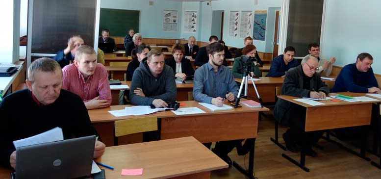

|
Заседание российского комитета рабочих
19-20 марта 2016 года

Часть 1. О привлечении работников в профсоюз.
Выступления:
- Олег Бабич, заместитель председателя Федерации профсоюзов России, Федеральный профсоюз авиадиспетчеров России
- Золотов Александр Владимирович, доктор экономических наук, профессор, консультант Российского комитета рабочих, вице-президент Фонда Рабочей Академии, Нижний Новгород
- Михайлов Егор Владимирович, судовой электромеханик, ОАО ЦС «Звездочка» (Ленинград)
- Гамов Лев Викторович, старший научный сотрудник Российского федерального ядерного центра — Всероссийского научно-исследовательского института экспериментальной физики, сопредседатель Межрегионального профессионального союза «Защита», г. Саров
- Кудрявцев Владимир Михайлович, представитель РКР по Нижегородской области
- Цареградская Людмила, Невинномысск, бывший председатель профсоюза
- Обнорский Николай Викторович, электромонтер-ремонтник ООО «Промпарксервис», г. Владимир
- Попов Михаил Васильевич, доктор философских наук, профессор по кафедре экономики и права, президент Фонда Рабочей Академии, консультант Российского комитета рабочих, Ленинград
- Золотов Александр Владимирович, доктор экономических наук, профессор, консультант Российского комитета рабочих, вице-президент Фонда Рабочей Академии, Нижний Новгород
Часть 2. Выборы и позиция профсоюзов.
- Беляев Михаил Юрьевич, представитель РКР по Ленинграду и Ленинградской области;
- Пугачёва Ружена Борисовна, сопредседатель Совета Союза рабочих Москвы;
- Попов Михаил Васильевич, доктор философских наук, профессор по кафедре экономики и права, президент Фонда Рабочей Академии, консультант РКР.
- Золотов Александр Владимирович, доктор экономических наук, профессор, консультант Российского комитета рабочих, вице-президент Фонда Рабочей Академии, Нижний Новгород
Часть 3. Бороться за заключение коллективных договоров в интересах работников.
- Обнорский Николай Викторович, электромонтер-ремонтник ООО «Промпарксервис», г. Владимир
- Кудрявцев Владимир Михайлович, представитель РКР по Нижегородской обл.
- Беляев Михаил Юрьевич, представитель РКР по Ленинграду и Ленинградской области;
- Попов Михаил Васильевич, доктор философских наук, профессор по кафедре экономики и права, президент Фонда Рабочей Академии, консультант РКР;
- Кальвит Валентин Владимирович, электромонтер ЗАО «Саровская генерирующая компания».
Часть 4. Контроль членов профсоюзов за использованием профсоюзных средств.
- Гамов Лев Викторович, старший научный сотрудник Российского федерального ядерного центра — Всероссийского научно-исследовательского института экспериментальной физики, сопредседатель Межрегионального профессионального союза «Защита», г. Саров
- Беляев Михаил Юрьевич, представитель РКР по Ленинграду и Ленинградской области;
- Цареградская Людмила, Невинномысск, бывший председатель профсоюза
Часть 5. Бороться за развитие отечественного производства.
- Кудрявцев Владимир Михайлович, представитель РКР по Нижегородской обл.
- Беляев Михаил Юрьевич, представитель РКР по Ленинграду и Ленинградской области;
- Пугачёва Ружена Борисовна, сопредседатель Совета Союза рабочих Москвы;
- Гамов Лев Викторович, старший научный сотрудник Российского федерального ядерного центра — Всероссийского научно-исследовательского института экспериментальной физики, сопредседатель Межрегионального профессионального союза «Защита», г. Саров
- Шумаков Анатолий Петрович, Ивановский союз рабочих;
- Попов Михаил Васильевич, доктор философских наук, профессор по кафедре экономики и права, президент Фонда Рабочей Академии, консультант РКР;
- Кальвит Валентин Владимирович, электромонтер ЗАО «Саровская генерирующая компания».
- Сенков Константин Александрович, токарь ОАО "Нижегородский водоканал";
- Тухманян Виктор Григорьевич, электромеханик ОАО "Муромский стрелочный завод";
- Теркин Алексей Георгиевич, корреспондент Красного ТВ;
|